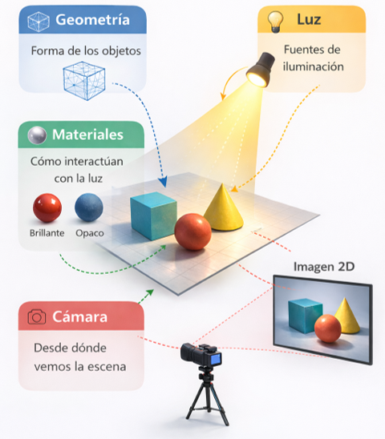
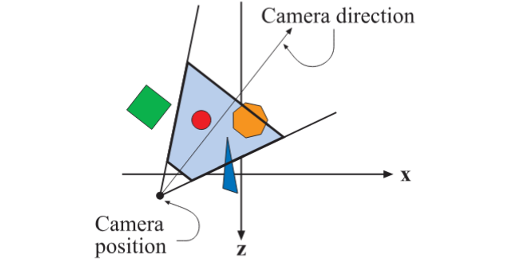
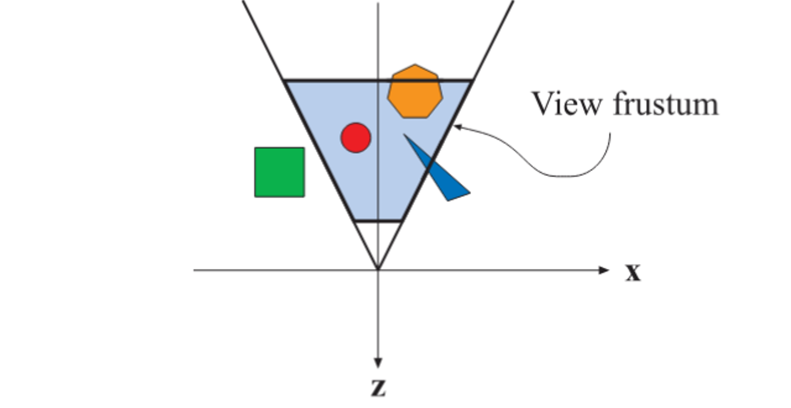
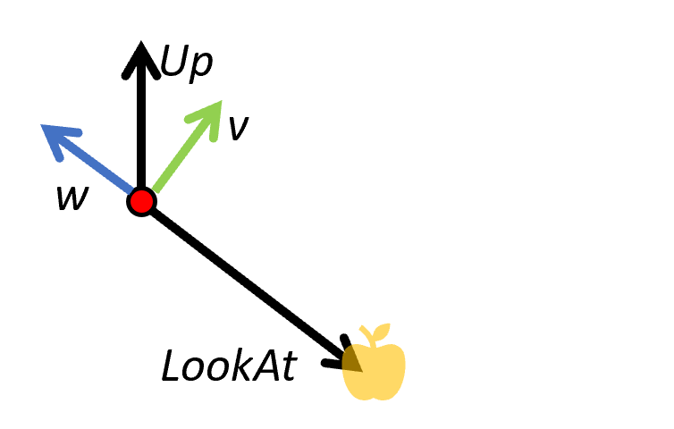
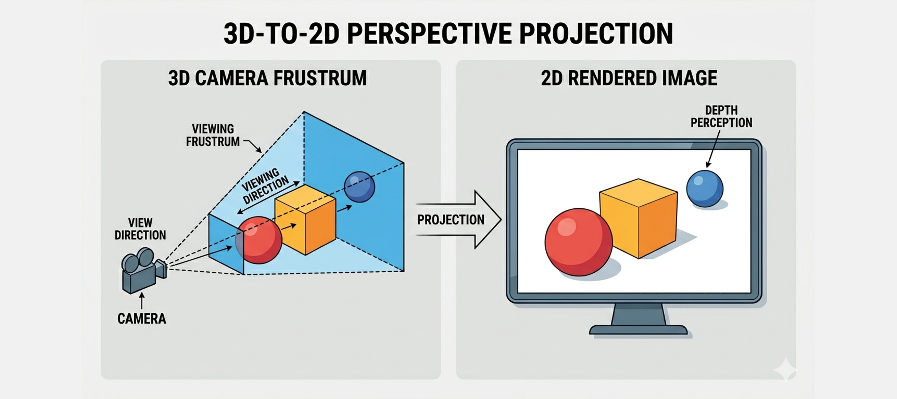
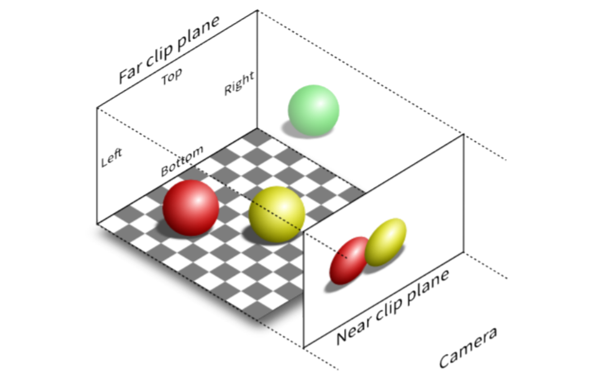
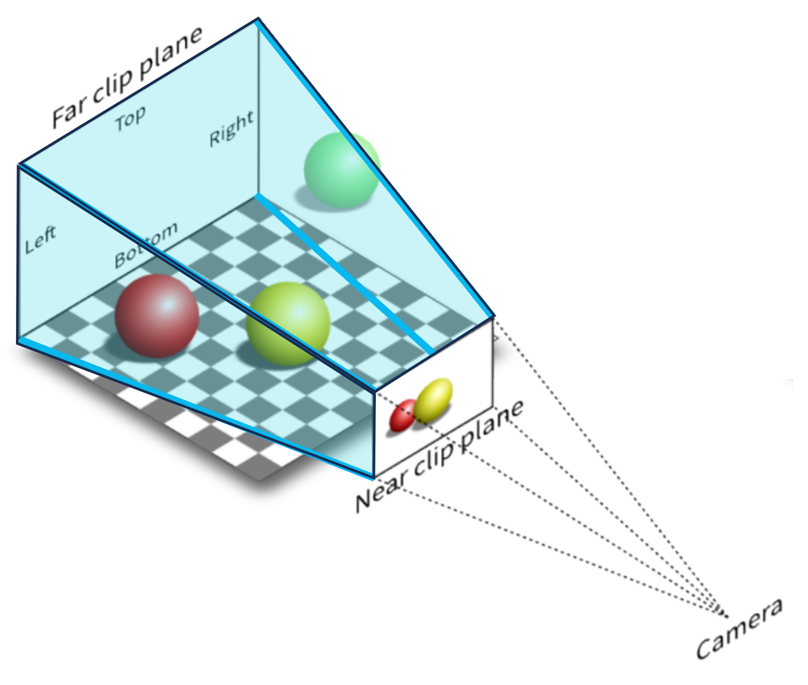
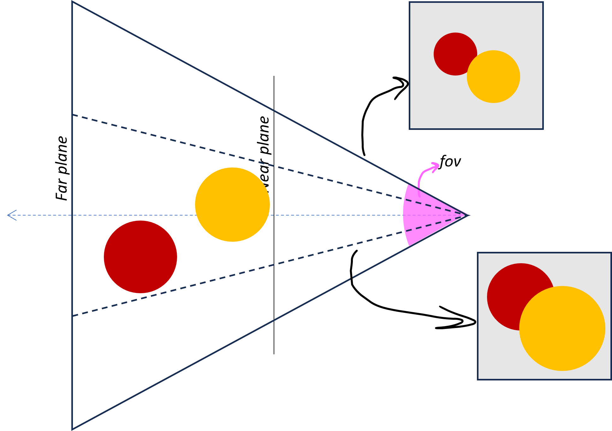
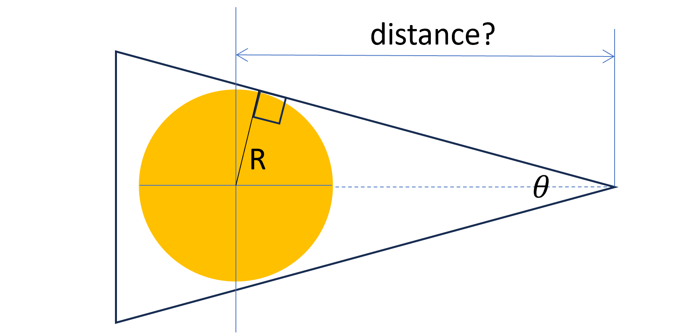
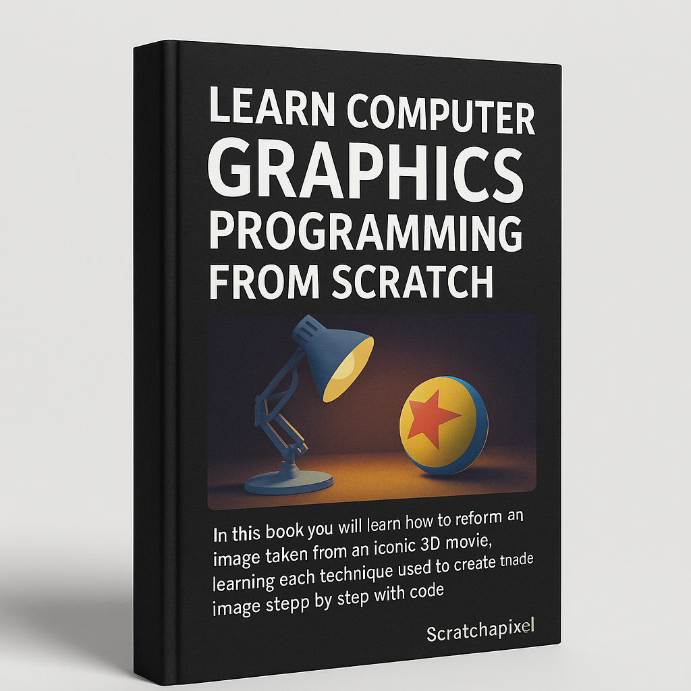

Clase 05 - Después de esta clase l@s alumn@s pueden explicar el modelo de iluminación Lambertiano, identificar sus parámetros, y razonar cómo la interacción entre luz y material determina el color observado.
Clase 06 - Después de esta clase los estudiantes pueden explicar el modelo de cámara pinhole, distinguir entre parámetros intrínsecos y extrínsecos, y calcular una configuración de cámara que encuadre un objeto dentro del frustum.

Durante las clases anteriores hemos visto cómo modelar un mundo 3D en el computador: partiendo de un espacio vacío definido por un sistema de coordenadas (world space), agregando geometría para representar superficies y definiendo su apariencia mediante materiales y texturas. En la clase pasada, además, vimos que la apariencia final también depende de las luces presentes en la escena.
Ahora queremos abordar cómo, a partir de ese modelo 3D, se generan imágenes 2D. Este tema lo veremos en tres clases, comenzando hoy con el estudio de la cámara virtual.
Camera Extrinsics
Nuestro mundo virtual puede verse completamente distinto dependiendo de dónde ubicamos la cámara y hacia dónde la orientamos. Estos parámetros se conocen como camera extrinsics, y definen la pose de la cámara en el espacio 3D.

Posición de la cámara: un punto en 3D desde donde observamos la escena
Dirección de mirada: hacia dónde está apuntando la cámara
Vector “up”: qué dirección consideramos “arriba” para la cámara

Con estos tres elementos podemos construir el sistema de coordenadas de la cámara y la transformación que lleva del world space al camara space.
Camera Space: alinea los vectores de look-at y up con los ejes principales. La convención usada en OpenGL es
- El eje -Z es la dirección de mirada (la cámara mira hacia -Z)
- El eje +X apunta hacia la derecha
- El eje +Y apunta hacia 'arriba'
💡Los puntos “enfrente” de la cámara tienen z negativo en camera space
Camera Coordinated System
La mayoría de las librerías de gráfica ofrecen facilidades para especificar la pose de la cámara:
- LookAt: se usa para especificar el punto a donde la cámara mira. La dirección de mirada se calcula a partir de este valor y la posición de la cámara.
- Up: este vector se usa como una indicación cruda de la dirección 'arriba' (e.g., [0,1,0]), pero la dirección final se calcula de forma que sea perpendicular a la dirección de la mirada.
El sistema the coordenadas [u, v, w] se calcula como: (en la imagen la dirección u es perpendicular a la pantalla)

# datos de ejemplo
position = np.array([5, 5, 5]) # donde está la cámara
look_at = np.array([0, 0, 0]) # a donde mira
up = np.array([0, 1, 0]) # dirección que consideramos 'arriba'
g = look_at - position # dirección de mirada
w = - g / np.linalg.norm(g) # atrás
u = np.cross(up, w) # derecha
u = u / np.linalg.norm(u)
v = np.cross(w, u) # arriba
View Transformation Matrix
La matriz de transformación se crea con estos vectores cómo las filas
T = np.array([u, v, w])
Para transformar un vector desde el sistema del mundo al sistema de la cámara hacemos:
vec_camera = T @ vec_world
Para transformar un punto desde el sistema del mundo al sistema de la cámara hacemos:
pt_camera = T @ (pt_world - camera.position)
Ya sabemos donde está la cámara y cómo ubicar a los objetos en 3D con respecto a ella.
¿Cómo se transforma lo que ve la cámara (3D) en una imagen 2D?
Para eso necesitamos un modelo de proyección.


Proyección ortográfica
Comencemos con el modelo más simple. Imaginemos que proyectamos cada punto de la escena en línea recta hacia el plano de imagen, sin importar su distancia.
En este caso:
- Los objetos no cambian de tamaño con la profundidad
- Las líneas paralelas se mantienen paralelas
El volumen de observación está limitado a una caja definida por dos planos en cada dimensión: left/right, top/bottom, y near/far planes.
Este modelo nos permite entender la idea de proyección, aunque todavía no captura cómo percibimos la profundidad en el mundo real.

Proyección Perspectiva
En una cámara real, los objetos lejanos se ven más pequeños que los cercanos.
Para modelar este efecto, usamos una proyección perspectiva. En este caso, los rayos de la escena convergen hacia la cámara, en lugar de ser paralelos.
Como resultado:
- Los objetos lejanos se ven más pequeños
- Aparece la sensación de profundidad
El volumen visible deja de ser una “caja” y pasa a ser un frustum (una pirámide truncada).
Este modelo es el que usamos para generar imágenes realistas.

Field of View
En una cámara perspectiva, el volumen visible (el frustum) queda completamente determinado por:
- Field of View (FOV) → define qué tan “abierta” es la cámara
- Aspect ratio → define la proporción horizontal/vertical
- Near y far planes → delimitan el rango de profundidad
Intuitivamente:
- FOV grande → vemos más escena (gran angular)
- FOV pequeño → vemos menos escena (zoom)

Encuadrando un objeto
Supongamos que queremos mostrar un objeto completo en la imagen.
Para simplificar, lo aproximamos por una esfera de radio R y colocamos la cámara mirando a su centro.
Si el Field of View (FOV) está fijo (e.g. 50 deg) ¿a qué distancia debemos ubicar la cámara para que el objeto quepa completo en la imagen?
sin(theta/2) = R / d
d = R / sin(theta/2)
Ejercicios:
1. Modifica los valores de fov, aspect, near y far para ver lo que sucede.
2. Descomenta el codigo para cambiar la camara2 a una cámara ortográfica.
3. En el método update, descomenta el código y discute por qué la cámara no sigue al cubo
4. Calcular la posición de la camara para que quepa el cubo mantener el angulo existente de la cámara.
Solución 3: para que la cámara siga al cubo necesitamos obtener la posición del cubo en world space
let wp = new THREE.Vector3();
mesh.getWorldPosition(wp);
camera2.lookAt(wp);
Solución 4: tenemos que implementar lo que vimos hoy.
Para calcular el radio R, consideremos que la esfera debe contener un cubo de lado 1.0, y que la diagonal de ese cubo es sqrt(3), entonces el radio de la esfera es R = sqrt(3) / 2 = 0.866. También podemos obtenerlo del geometry bounding sphere.
Para calcular la distancia d, utilizamos la formula que vimos hoy: d = R / sin(fov/2.0), pero con el cuidado de convertir FOV de grados a radianes multiplicando por Math.PI y dividiendo por 180.
Para ubicar la cámara sin cambiar el ángulo, obtenemos la dirección normalizando su posición actual, y luego multiplicamos por la distancia.
geometry.computeBoundingSphere();
let sphere = geometry.boundingSphere;
// https://threejs.org/docs/#Vector3
let d = sphere.radius / Math.sin(camera2.fov * Math.PI / 180 / 2.0) ;
camera2.position.normalize().multiplyScalar(d);

The Pinhole Camera Model by Scratch a Pixel (Recomendado!)
Una lectura un poco más liviana enfocada en el modelo de la cámara. Son 4 paginas, el link lleva a la primera.
Fundamentals of Computer Graphics | Capitulo 8 - Viewing
Profundiza en las matrices necesarias para implementar la transformación de world-space a camera-space, y las matrices de proyección de perspectiva y ortográficas.